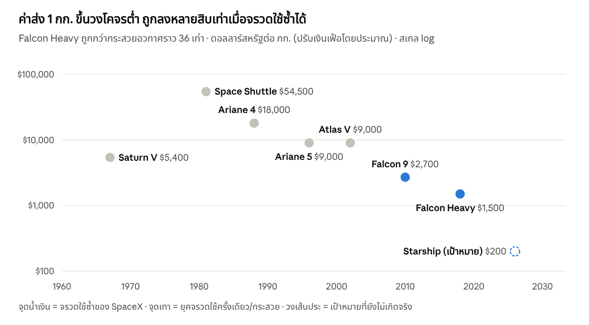
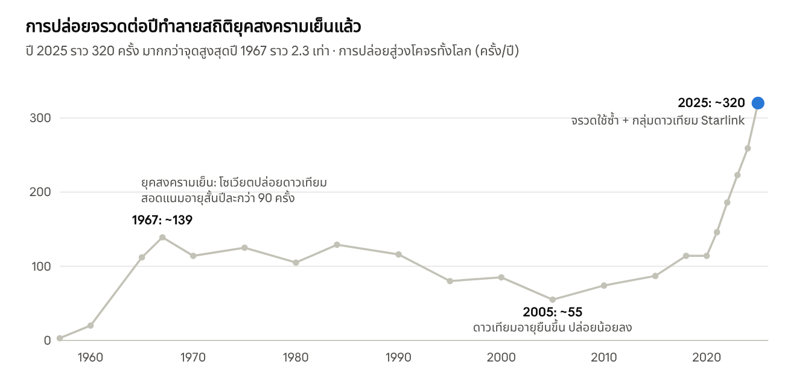

อุตสาหกรรมอวกาศและดาวเทียม: ภาพรวมสำหรับนักทดลอง
เศรษฐกิจอวกาศโลกมีมูลค่าราว 600,000 ล้านดอลลาร์ต่อปี และกว่าครึ่งมาจากบริการบนโลกที่ใช้ข้อมูลหรือสัญญาณดาวเทียม ไม่ใช่จากจรวด ตัวเลขในเอกสารนี้เป็นค่าประมาณจากความรู้ทั่วไปของอุตสาหกรรม ยังไม่ได้ตรวจกับแหล่งต้นฉบับทีละตัว ใช้เพื่อเห็นภาพสัดส่วนและลำดับขนาด
1. อุตสาหกรรมอวกาศวันนี้ครอบคลุมอะไรบ้าง
แบ่งง่ายๆ เป็นต้นน้ำ (สร้างและส่งของขึ้นไป) กับปลายน้ำ (ใช้ประโยชน์จากสิ่งที่อยู่บนฟ้า) ปลายน้ำคือส่วนที่ใหญ่ที่สุดและเติบโตเร็วที่สุด
| กลุ่ม | ทำอะไร | ตัวอย่างสิ่งที่เราใช้ในชีวิตประจำวัน |
|---|---|---|
| ปล่อยจรวด (Launch) | ขนดาวเทียม คน และสินค้าขึ้นวงโคจร | ค่าส่งที่ถูกลงทำให้มีดาวเทียมจิ๋วจำนวนมาก |
| ผลิตดาวเทียมและยาน | ออกแบบ สร้าง ทดสอบตัวดาวเทียมและชิ้นส่วน | ชิปทนรังสี แผงโซลาร์ เสาอากาศ |
| สื่อสาร (SatCom) | อินเทอร์เน็ต ทีวีดาวเทียม โทรศัพท์ผ่านดาวเทียม | Starlink, ทีวีจานดาวเทียม, SOS ผ่านดาวเทียมในมือถือ |
| นำทาง (GNSS) | ส่งสัญญาณเวลาและตำแหน่ง | GPS ในแผนที่ เรียกรถ ส่งของ เวลาธนาคาร |
| สำรวจโลก (Earth Observation) | ถ่ายภาพแสง เรดาร์ อินฟราเรด | พยากรณ์อากาศ ประกันพืชผล ผังเมือง ตรวจไฟป่า |
| สถานีอวกาศและการทดลอง | ห้องแล็บไร้น้ำหนัก ผลิตวัสดุพิเศษ | ISS, Tiangong, สถานีเอกชนที่กำลังสร้าง |
| สำรวจห้วงอวกาศ | ยานไปดวงจันทร์ ดาวอังคาร กล้องโทรทรรศน์ | Artemis, JWST |
| ความปลอดภัยและความมั่นคง | ดาวเทียมทหาร เตือนภัยขีปนาวุธ | ส่วนใหญ่เป็นงบรัฐ |
| บริการในวงโคจร | เติมเชื้อเพลิง ซ่อม ลากดาวเทียมเสีย เก็บขยะอวกาศ | กลุ่มใหม่ที่เพิ่งเริ่มมีลูกค้า |
| ภาคพื้นดินและซอฟต์แวร์ | สถานีรับสัญญาณ วิเคราะห์ภาพด้วย AI | แพลตฟอร์มขายภาพและข้อมูลวิเคราะห์ |
2. บนโลกกับนอกโลก ส่งผลต่ออิเล็กทรอนิกส์และอาหารอย่างไร
ศัตรูหลักของชิปในอวกาศคือรังสีและความร้อนที่ระบายออกไม่ได้ ส่วนศัตรูหลักของอาหารคือเวลาเก็บที่นานและการไม่มีแรงโน้มถ่วง นั่นทำให้ชิ้นส่วนทุกชิ้นต้องผ่านการทดสอบบนโลกที่จำลองอวกาศก่อนขึ้นบิน
| ปัจจัย | บนโลก | ในวงโคจรต่ำ (LEO) | ผลต่ออิเล็กทรอนิกส์ | วิธีแก้ |
|---|---|---|---|---|
| รังสี | บรรยากาศและสนามแม่เหล็กกันไว้ | อนุภาคพลังงานสูงจากดวงอาทิตย์และจักรวาล เข็มขัด Van Allen | บิตพลิก (SEU), ทรานซิสเตอร์ค่อยๆ เสื่อม (TID), ลัดวงจรไหม้ (latch-up) | ชิป Rad-hard, ECC memory, คอมพิวเตอร์สำรอง 3 ตัวโหวต, watchdog รีสตาร์ท |
| อุณหภูมิ | อากาศพาความร้อนออก (พัดลม) | ฝั่งแดดราว +120°C ฝั่งเงาราว -150°C สลับทุก ~90 นาที | พัดลมใช้ไม่ได้ ความร้อนออกได้ทางการนำและแผ่รังสีเท่านั้น รอยบัดกรีแตกจากขยายตัว | แผ่นระบายความร้อน (radiator), ผ้าห่ม MLI สีทอง, ฮีตเตอร์, ท่อนำความร้อน |
| สุญญากาศ | ความดัน 1 บาร์ | เกือบไม่มีอากาศ | พลาสติกคายไอ (outgassing) ไปเกาะเลนส์, หนวดดีบุก (tin whisker), ชิ้นส่วนโลหะติดกันเอง (cold welding) | วัสดุผ่านมาตรฐาน low-outgassing, อบไล่ความชื้น (bake-out), ตะกั่วผสม |
| แรงสั่นตอนปล่อยจรวด | ไม่มี | สั่นหลาย g และเสียงดังมาก ช่วง 10 นาทีแรก | ขาชิปหัก คริสตัลร้าว | ทดสอบบนโต๊ะเขย่า (shaker), ยึดด้วย epoxy |
| ออกซิเจนอะตอม (ที่ความสูง 200–600 กม.) | ไม่มี | กัดกร่อนพลาสติกและผิววัสดุ | ฟิล์มและสายไฟเสื่อม | เคลือบผิวกันการกัดกร่อน |
| ขยะอวกาศ/อุกกาเล็ก | ไม่มี | เศษเล็กสุดเร็ว ~7–10 กม./วินาที | เจาะรูแผงโซลาร์ สายไฟขาด | เกราะ Whipple, หลบเมื่อมีคำเตือน |
ชิป Rad-hard มักช้ากว่าชิปบนโต๊ะหลายรุ่นแต่แพงกว่าหลายสิบเท่า เช่น หน่วยประมวลผล RAD750 ที่ใช้ในยานสำรวจดาวอังคารเทียบได้กับซีพียูยุคปลาย 1990s แต่ราคาหลักแสนบาทต่อบอร์ด ดาวเทียมจิ๋วและ Starlink เลือกทางตรงข้าม คือใช้ชิปพาณิชย์ราคาถูก แล้วพึ่งซอฟต์แวร์แก้ไขความผิดพลาดกับการสำรองหลายชุด เพราะอยู่ในวงโคจรต่ำที่รังสีน้อยกว่าและอายุสั้นกว่า
อาหารและการทดลองทางชีวภาพ
| ประเด็น | สิ่งที่เกิดในอวกาศ | วิธีจัดการ |
|---|---|---|
| เศษอาหารลอย | เศษขนมปังลอยเข้าเครื่องมือและตา | ใช้แผ่นแป้งตอร์ติยาแทนขนมปัง ซอสเหนียว เกลือพริกไทยเป็นน้ำ |
| รสชาติจืดลง | ของเหลวในร่างกายไหลขึ้นหัว คัดจมูกคล้ายเป็นหวัด | นักบินอวกาศชอบอาหารเผ็ด เปรี้ยว ซอสพริก |
| อายุการเก็บ | ภารกิจดาวอังคารต้องการอาหารอายุ 3–5 ปี วิตามินบางตัวสลายเร็วเพราะรังสี | อบแห้งเยือกแข็ง (freeze-dried), ฆ่าเชื้อด้วยความร้อน (thermostabilized), บรรจุภัณฑ์กันออกซิเจน |
| ปลูกพืช | น้ำไม่ไหลลง รากจมน้ำหรือแห้ง รากโตตามแสงแทนแรงโน้มถ่วง | ชุดปลูก Veggie บน ISS ใช้หมอนดินและ LED แดง-น้ำเงิน |
| เชื้อโรค | แบคทีเรียบางชนิดดุขึ้นในสภาพไร้น้ำหนัก ภูมิคุ้มกันนักบินอ่อนลง | มาตรฐาน HACCP ซึ่งจริงๆ แล้ว NASA เป็นผู้ร่วมคิดค้นในยุค 1960s แล้วกลายเป็นมาตรฐานโรงงานอาหารทั่วโลก |
ในทางกลับกัน สภาพไร้น้ำหนักก็มีประโยชน์ ผลึกโปรตีนสำหรับพัฒนายาโตได้สม่ำเสมอกว่า และมีบริษัททดลองผลิตสายใยแก้ว ZBLAN และผลึกสารกึ่งตัวนำในวงโคจร เพราะไม่มีการตกตะกอนหรือการพาความร้อนแบบพาหะทำให้คริสตัลบิดเบี้ยว
3. ในดาวเทียม 1 ดวงมีอะไรบ้าง
ดาวเทียมทุกดวงแบ่งเป็น 2 ส่วน: Payload คืออุปกรณ์ที่ทำภารกิจ (กล้อง เสาสื่อสาร นาฬิกาอะตอม) กับ Bus คือตัวยานที่เลี้ยงให้ payload ทำงานได้ คล้ายสมาร์ทโฟนที่มีแบต เสา และซีพียูเป็น bus และกล้องเป็น payload
ประเภทตามการใช้งาน
| ประเภท | วงโคจรที่ใช้บ่อย | Payload หลัก |
|---|---|---|
| สื่อสาร | LEO 550 กม. (กลุ่มดาวเทียมจำนวนมาก) หรือ GEO 35,786 กม. (ดวงใหญ่ค้างฟ้า) | เสา phased array, transponder, ลิงก์เลเซอร์ระหว่างดาวเทียม |
| ถ่ายภาพพื้นโลก | LEO วงโคจรสัมพันธ์ดวงอาทิตย์ (SSO) 500–800 กม. | กล้องแสงที่มองเห็น, กล้องหลายแถบสี (multispectral/hyperspectral), เรดาร์ SAR |
| อุตุนิยม | GEO (ดูภูมิภาคเดิมทุก 10 นาที) + LEO ขั้วโลก | เครื่องวัดรังสีอินฟราเรดและไมโครเวฟ, เครื่องรับ GPS radio occultation |
| นำทาง | MEO ~20,000 กม. | นาฬิกาอะตอม เครื่องส่งสัญญาณ L-band |
| วิทยาศาสตร์/ดาราศาสตร์ | LEO, จุด L2 ห่าง 1.5 ล้าน กม. | กล้องโทรทรรศน์ เครื่องตรวจจับอนุภาค |
| ทดสอบเทคโนโลยี (IOD) | LEO ต่ำ | ชิ้นส่วนใหม่ที่อยากพิสูจน์ว่าใช้ได้จริงในอวกาศ |
| ยานมีนักบิน/ขนส่ง | LEO 400 กม. ไปสถานี | ระบบพยุงชีพ โล่กันความร้อนขากลับ ระบบเทียบท่า |
ระบบย่อยของ Bus และเซนเซอร์
| ระบบย่อย | หน้าที่ | เซนเซอร์และอุปกรณ์ที่ใช้ |
|---|---|---|
| ADCS ควบคุมท่าทาง | หันกล้อง/เสาให้ชี้ถูกทิศ แม่นระดับพันส่วนองศา | กล้องจับดาว (star tracker), เซนเซอร์ดวงอาทิตย์, แมกนีโตมิเตอร์, ไจโรสโคป; ตัวหมุนคือล้อปฏิกิริยา (reaction wheel) และแม่เหล็กไฟฟ้า (magnetorquer) |
| GNC นำทาง | รู้ตำแหน่งและความเร็ว | เครื่องรับ GPS แบบอวกาศ (ต้องปลดล็อกความเร็วเกิน 515 ม./วินาทีที่เครื่องพลเรือนถูกจำกัดไว้) |
| EPS พลังงาน | ผลิต เก็บ แจกจ่ายไฟ | แผงโซลาร์, แบตลิเธียม, วงจร MPPT, เซนเซอร์กระแส/แรงดัน |
| OBC คอมพิวเตอร์ | สมองของดาวเทียม ตัดสินใจเองเมื่ออยู่นอกระยะสถานีภาคพื้น | MCU/FPGA, เซนเซอร์อุณหภูมิหลายสิบจุด |
| COMMS สื่อสาร | รับคำสั่ง (uplink) ส่งข้อมูล (downlink) | วิทยุ UHF/S/X/Ka-band, เสา |
| Thermal ควบคุมความร้อน | รักษาแบตที่ 0–30°C | เทอร์มิสเตอร์, ฮีตเตอร์, radiator |
| Propulsion ขับเคลื่อน | รักษาและปรับวงโคจร หลบขยะ | เครื่องยนต์ไฮดราซีน, เครื่องยนต์ไอออน/Hall thruster (ซีนอน คริปตอน อาร์กอน) |
| Structure โครงสร้าง | รับแรงตอนปล่อย ยึดทุกอย่าง | ดูตารางวัสดุด้านล่าง |
วัสดุโครงสร้าง
| วัสดุ | ใช้ที่ไหน | ทำไมเลือก |
|---|---|---|
| อะลูมิเนียม 6061/7075 | โครง CubeSat, แผ่นยึด | เบา กลึงง่าย ราคาถูก |
| แผ่นรังผึ้งอะลูมิเนียม (honeycomb sandwich) | ผนังดาวเทียมขนาดกลาง-ใหญ่ | แข็งมากต่อน้ำหนัก |
| คาร์บอนไฟเบอร์ (CFRP) | โครงกล้อง แขนแผง ถังจรวด | ขยายตัวตามความร้อนเกือบศูนย์ กล้องจึงไม่เบลอ |
| ไทเทเนียม | ถังเชื้อเพลิงแรงดันสูง น็อต | แข็งและทนความร้อน |
| แก้วและเซรามิก Zerodur/ULE, เบริลเลียม | กระจกกล้อง | คงรูปร่างแม้อุณหภูมิเปลี่ยน |
| ผ้า MLI (Kapton เคลือบอะลูมิเนียมหลายชั้น) | ห่อหุ้มตัวดาวเทียม (สีทองที่เห็น) | กันความร้อนเข้าออก |
| สแตนเลส 304L + แผ่นกันความร้อน | ตัวจรวด Starship | ราคาถูก เชื่อมง่าย แข็งขึ้นที่อุณหภูมิต่ำ |
4. ทำไมดาวเทียมมีหลายไซส์ และดาวเทียมจิ๋วไปทำอะไร
ขนาดถูกกำหนดด้วยฟิสิกส์ของ payload เป็นหลัก: ความคมชัดของกล้องขึ้นกับเส้นผ่านศูนย์กลางเลนส์ และความแรงสัญญาณขึ้นกับขนาดเสาและพลังงาน ดาวเทียมจิ๋วจึงเก่งเรื่องจำนวนและความถี่ ส่วนดาวเทียมใหญ่เก่งเรื่องความคมชัดและกำลัง
| คลาส | มวล | ขนาดเทียบ | ใช้ทำอะไร | ต้นทุนตัวดาวเทียม (ประมาณ) |
|---|---|---|---|---|
| PocketQube / ChipSat | 0.01–0.5 กก. | กล่อง 5 ซม. หรือแผ่นวงจรเดียว | การศึกษา ทดสอบชิป | หลักหมื่นดอลลาร์ |
| CubeSat 1U | ~1.3 กก. | ลูกบาศก์ 10 ซม. | ดาวเทียมมหาวิทยาลัย วิทยุสมัครเล่น ทดสอบเซนเซอร์ | 50,000–150,000 ดอลลาร์ |
| CubeSat 3U–16U | 4–25 กก. | กล่องขนมปังถึงกระเป๋าเดินทาง | ถ่ายภาพความละเอียด 3–5 ม. (Planet Dove), ติดตามเรือ AIS, IoT, วัดอากาศ (Spire) | 0.5–5 ล้านดอลลาร์ |
| Microsat | 10–100 กก. | ตู้เย็นเล็ก | เรดาร์ SAR (ICEYE, Capella), ภาพ 50 ซม. (SkySat) | 5–30 ล้านดอลลาร์ |
| Smallsat | 100–500 กก. | ตู้เย็นบ้าน | Starlink V2 mini (~800 กก. เกินนิด), Pelican, ดาวเทียมสำรวจทรัพยากร เช่น THEOS-2 | 0.5 ล้าน (ผลิตจำนวนมาก) ถึง 100 ล้าน |
| ดาวเทียมใหญ่ | 1,000–6,500 กก. | รถบัส แผงกาง 30–40 ม. | สื่อสาร GEO, อุตุนิยม GOES/Himawari, ภาพความละเอียด 30 ซม. (WorldView) | 150–500 ล้าน |
| เรือธงวิทยาศาสตร์ | 6,000+ กก. | อาคาร | JWST, Hubble | 1,000–10,000 ล้าน |
ดาวเทียมจิ๋วที่เห็นบ่อย มักทำหนึ่งใน 4 อย่างนี้:
ทดสอบเทคโนโลยีในวงโคจร (IOD) เช่น ชิป AI ใหม่ เครื่องยนต์ไอออนขนาดเล็ก เลเซอร์สื่อสาร ก่อนใส่ในดาวเทียมใหญ่ที่แพงกว่าพันเท่า เพราะบริษัทมักไม่ยอมใช้ชิ้นส่วนที่ไม่เคยบิน (flight heritage)
ถ่ายภาพบ่อยๆ ฝูง 200 ดวงของ Planet ถ่ายพื้นดินทั้งโลกได้เกือบทุกวัน แม้คมชัดน้อยกว่าดาวเทียมใหญ่
ฟังสัญญาณวิทยุจากพื้นโลก เช่น AIS เรือ ADS-B เครื่องบิน สัญญาณเซนเซอร์ IoT ในฟาร์ม
การศึกษา ออกแบบได้ภายใน 1–2 ปี ด้วยชิ้นส่วนสำเร็จรูป และอาศัยที่นั่งเหลือในจรวด (rideshare) เช่น Falcon 9 Transporter ราคาเริ่มราว 6,000 ดอลลาร์ต่อกก.
5. ยานรักษาวงโคจรไม่ให้ตกและไม่หลุดได้อย่างไร
ดาวเทียมไม่ได้ "ลอย" แต่กำลัง "ตกตลอดเวลาแต่พลาดพื้นโลก" เพราะวิ่งด้านข้างเร็วพอ ที่ 400 กม. ต้องเร็วประมาณ 7.67 กม./วินาที (รอบโลกทุก ~92 นาที) ถ้าช้าไปจะค่อยๆ ต่ำลง ถ้าเร็วเกิน 11.2 กม./วินาทีจะหลุดออกจากโลก
v = \sqrt{\frac{G M}{r}} \qquad T = 2\pi\sqrt{\frac{r^3}{G M}}
อะไรดึงดาวเทียมออกจากวงโคจร
| แรงรบกวน | สำคัญที่ไหน | ผล |
|---|---|---|
| แรงต้านอากาศ (drag) | ต่ำกว่า ~600 กม. | ความสูงลดทุกวัน ISS ตกราว 2 กม./เดือน พายุสุริยะทำให้บรรยากาศพองตัว เช่น ก.พ. 2022 Starlink เสีย 38 ดวงจากพายุแม่เหล็ก |
| โลกไม่กลม (J2) | ทุกวงโคจร | ระนาบวงโคจรหมุนช้าๆ วิศวกรใช้ประโยชน์ตรงนี้ทำวงโคจร SSO ที่ผ่านทุกที่เวลาเดิมทุกวัน |
| ดวงจันทร์/ดวงอาทิตย์ | GEO | ดึงให้เอียงเหนือ-ใต้ ต้องจุดเครื่องแก้ปีละ ~50 ม./วินาที |
| แรงดันแสงอาทิตย์ | ดาวเทียมที่แผงใหญ่เทียบกับมวล | เบี้ยงตำแหน่งทีละนิด |
วิธีรักษาวงโคจร (station-keeping)
จุดเครื่องเพิ่มความเร็วด้านหน้า (prograde burn) เมื่อความสูงต่ำกว่าเกณฑ์ ISS ใช้เครื่องยนต์ยานขนส่งที่เทียบท่า Starlink ใช้เครื่องยนต์ Hall ทำงานนานๆ แต่แรงเบา
ลดพื้นที่ปะทะ หันแผงโซลาร์ให้เฉือนกระแสอากาศ (ท่า "open book") เมื่อบรรยากาศพองตัว
บินสูงกว่า ดาวเทียมที่ไม่มีเครื่องยนต์มักอยู่ 500–600 กม. ซึ่งอยู่ได้หลายปีแต่ไม่เกิน 25 ปีตามกฎการลดขยะ (FCC สหรัฐฯ ลดเหลือ 5 ปีหลังหมดภารกิจ)
หลบขยะ หน่วยงานติดตามวัตถุอวกาศส่งคำเตือนเมื่อโอกาสชนสูง Starlink หลบอัตโนมัติหลายหมื่นครั้งต่อปี
หมดอายุ LEO ต่ำความสูงให้เผาไหม้ในบรรยากาศ ส่วน GEO ดันขึ้นไป "วงโคจรสุสาน" สูงกว่าเดิม ~300 กม. เพราะตกลงมาไม่ได้
ดูผลนี้เป็นภาพได้ใน Simulation (หัวข้อสุดท้าย): ปิดเครื่องยนต์แล้วดูดาวเทียมค่อยๆ ตก ลองเร่งความเร็วเกิน 11.2 กม./วินาทีแล้วดูมันหลุดออกไป
6. ไฟฟ้าและสัญญาณในอวกาศต่างจากบนโลกอย่างไร
ในอวกาศไม่มีปลั๊กไฟและไม่มีเสาสัญญาณใกล้ๆ ทุกวัตต์และทุกบิตจึงแพง ดาวเทียม LEO อยู่ในเงาโลกราว 35 นาทีทุกรอบ และเห็นสถานีภาคพื้นแต่ละแห่งเพียงครั้งละ 5–10 นาที
| เรื่อง | บนโลก | ในอวกาศ |
|---|---|---|
| แหล่งไฟ | โรงไฟฟ้า ไฟบ้าน 220V AC | แผงโซลาร์เท่านั้น (แสงแรงกว่าบนพื้น ~1,361 W/m² ตลอดเวลาไม่มีเมฆ); ยานไปไกลใช้ RTG พลังความร้อนจากพลูโตเนียม-238 |
| ชนิดเซลล์แสงอาทิตย์ | ซิลิคอน ~22% ราคาถูก | แกลเลียมอาร์เซไนด์ 3 ชั้น (GaAs triple-junction) ~30% ทนรังสี แต่แพงกว่าราว 100 เท่าต่อวัตต์; Starlink ใช้ซิลิคอนเพื่อลดต้นทุน |
| การเก็บไฟ | แบตชาร์จวันละครั้ง | แบตลิเธียมชาร์จ-คาย ~5,500 รอบต่อปี จึงใช้แค่ 20–30% ของความจุเพื่อให้อยู่ได้หลายปี |
| บัสไฟ | AC แรงดันสูง | DC 28V (ดาวเทียมเก่า), 100V (ดาวเทียมใหญ่ใหม่), 3.3/5V (CubeSat) |
| ความร้อนจากไฟ | พัดลมระบาย | ทุกวัตต์ที่ใช้กลายเป็นความร้อนที่ต้องแผ่ออกทาง radiator |
| ระยะส่งสัญญาณ | WiFi 50 ม., มือถือ 1–30 กม. | LEO 550–2,000 กม., GEO 36,000 กม. (ดีเลย์ไปกลับ ~0.5 วินาที) |
| เสา | เสาตั้งที่นิ่ง | เสาบนดาวเทียมและจานภาคพื้นต้องหันตามกัน ใช้ phased array หันลำคลื่นด้วยอิเล็กทรอนิกส์ไม่ต้องขยับ |
| สัญญาณเพี้ยน | น้อย | Doppler shift หลายสิบ kHz เพราะความเร็ว 7.5 กม./วินาที ต้องชดเชยความถี่ตลอด; ฝนตกหนักดูดซับสัญญาณ Ka-band (ปัญหาใหญ่ของเมืองไทยหน้าฝน) |
| ความถี่ | จัดสรรในประเทศ (กสทช.) | ต้องจดทะเบียนกับ ITU ระดับโลก และขอใบอนุญาตในทุกประเทศที่ให้บริการ |
| เชื่อมระหว่างกัน | สายไฟเบอร์ | เลเซอร์ระหว่างดาวเทียม (Optical ISL) ส่งต่อกันเป็นทอดๆ ก่อนลงสถานี แสงในสุญญากาศเร็วกว่าในใยแก้ว ~30% |
7. ถ่ายภาพเมืองเดิมให้คมชัด ทั้งที่เคลื่อนที่เร็วและมีเมฆบังได้อย่างไร
คำตอบสั้นๆ: บังคับวงโคจรให้ผ่านที่เดิมเวลาเดิม ใช้เซนเซอร์ที่สะสมแสงตามความเร็ว และใช้เรดาร์เมื่อเมฆบัง ส่วนเลนส์นั้นแทบไม่มีใครเช็ด จึงเน้นการกันไม่ให้สกปรกตั้งแต่แรก
| ปัญหา | ทำไมยาก | วิธีที่ใช้จริง |
|---|---|---|
| เคลื่อนที่เร็ว | จุดใต้ดาวเทียมเลื่อน ~7 กม./วินาที ภาพ 50 ซม. จะเบลอถ้าเปิดชัตเตอร์นานเกิน ~70 ไมโครวินาที | เซนเซอร์แบบกวาด (push-broom) เก็บทีละแถวเหมือนสแกนเนอร์, TDI สะสมแสงหลายแถวตามการเคลื่อนที่, หมุนตัวดาวเทียมชดเชย (back-scan) |
| ดาวเทียมสั่น | ล้อปฏิกิริยาที่หมุนส่งแรงสั่นเล็กๆ ทำภาพสั่น (jitter) | แท่นกันสั่น, ปิดล้อบางตัวตอนถ่าย, star tracker แม่นสูง |
| ต้องเทียบภาพที่เดิม | มุมกล้องและเงาต่างกันทุกครั้ง | วงโคจร SSO ผ่านเวลาท้องถิ่นเดิม (เช่น 10:30 น.) ทุกครั้ง, ออร์โทรเร็กติฟายด้วยแบบจำลองความสูง (DEM) แล้วจับคู่พิกเซล (co-registration) ก่อนให้ AI หาสิ่งที่เปลี่ยน |
| เมฆบัง | พื้นที่เขตร้อนอย่างไทยมีเมฆบ่อยมากช่วงมรสุม | เรดาร์ SAR มองทะลุเมฆและกลางคืน, ถ่ายบ่อยๆ แล้วเลือกพิกเซลที่ไม่มีเมฆมาต่อกัน (cloud-free mosaic) |
| ควัน/หมอก | ทำให้ภาพสีซีด | แก้บรรยากาศ (atmospheric correction), ใช้แถบอินฟราเรดคลื่นสั้น (SWIR) |
เลนส์สกปรกทำความสะอาดอย่างไร
ในอวกาศไม่มีฝุ่นและคราบน้ำแบบบนโลก ตัวการสกปรกจริงคือไอระเหยจากตัวดาวเทียมเองที่ไปจับเกาะเลนส์ และน้ำที่กลายเป็นน้ำแข็งบนกระจกที่เย็นจัด
ประกอบในห้องสะอาด (cleanroom ISO 5–8) และอบไล่ไอระเหยในห้องสุญญากาศก่อนปล่อย
ฝาปิดเลนส์ ปิดตอนปล่อยจรวดและช่วงแรกที่ไอระเหยออกมาก เปิดหลังจากนั้นหลายสัปดาห์
ฮูดกันแสงและกล้องท่อยาว กันแสงแดดตรงและอุกกาเล็ก
อบด้วยฮีตเตอร์ (decontamination) เมื่อพบว่าความไวแสงลด อุ่นกระจกให้น้ำแข็งระเหิดออก เช่นกล้องโทรทรรศน์ Gaia ทำหลายครั้ง
ปรับเทียบในวงโคจร (on-orbit calibration) ถ่ายดวงจันทร์ ทะเลทราย หรือแผ่นอ้างอิงในตัวกล้อง แล้วใช้ซอฟต์แวร์ชดเชยความไวที่ลดลง
ถ้าเสียจริง ส่วนใหญ่ทำอะไรไม่ได้ ยกเว้น Hubble ที่นักบินไปซ่อมใส่เลนส์แก้สายตาในปี 1993 ทุกวันนี้จึงมักส่งดาวเทียมรุ่นใหม่ทดแทนแทนการซ่อม
8. ตัวอย่างบริษัทในแต่ละกลุ่ม
| กลุ่ม | บริษัทต่างประเทศ | ในไทย/อาเซียน |
|---|---|---|
| ปล่อยจรวด | SpaceX, Rocket Lab, Blue Origin, ULA (Boeing+Lockheed), Arianespace, ISRO, CASC (จีน) | ยังไม่มี ใช้บริการต่างประเทศ |
| ผู้สร้างดาวเทียมใหญ่ | Airbus Defence and Space, Thales Alenia Space, Boeing, Lockheed Martin, Maxar, Northrop Grumman | ไทยจ้าง Airbus สร้าง THEOS-2 พร้อมถ่ายทอดเทคโนโลยี |
| ผู้สร้างดาวเทียมเล็ก/ชิ้นส่วน | Surrey Satellite (SSTL), Terran Orbital, Apex, EnduroSat, GomSpace, ISISpace | mu Space, NBSpace, นักศึกษา KMUTNB/มหิดล (KNACKSAT, JAIKIT), GISTDA |
| สื่อสาร | Starlink (SpaceX), Amazon Kuiper, OneWeb–Eutelsat, SES, Viasat, AST SpaceMobile, Iridium | Thaicom (ดาวเทียม GEO ไทคม) |
| ถ่ายภาพแสง | Planet Labs, Maxar (WorldView), Airbus (Pléiades Neo), Satellogic, BlackSky | GISTDA (THEOS-1/2) |
| เรดาร์ SAR | ICEYE, Capella Space, Umbra, Synspective | — |
| อุตุนิยม/สภาพอากาศ | NOAA (GOES), EUMETSAT, JMA (Himawari ที่ไทยใช้), Spire Global, Tomorrow.io | กรมอุตุนิยมวิทยาใช้ภาพ Himawari |
| วิเคราะห์ข้อมูลภาพ | Orbital Insight, Descartes Labs, Google Earth Engine, EOS Data Analytics | สตาร์ทอัพด้านเกษตรแม่นยำที่ใช้ภาพ Sentinel |
| บริการในวงโคจร/ขยะ | Astroscale, Northrop MEV, LeoLabs, Starfish Space | — |
| สถานีอวกาศเอกชน | Axiom Space, Vast, Voyager/Starlab, Varda (ผลิตยาในอวกาศ) | — |
พยากรณ์อากาศในชีวิตจริงมาจาก 2 ชั้น ดาวเทียม GEO อย่าง Himawari ดูเมฆทั้งทวีปทุก 10 นาที ส่วนดาวเทียม LEO วัดอุณหภูมิและความชื้นทีละชั้นบรรยากาศแล้วป้อนเข้าซูเปอร์คอมพิวเตอร์ที่คำนวณแบบจำลองอากาศ (เช่น ECMWF) ซึ่งตอนนี้เริ่มมี AI อย่าง GraphCast มาช่วย
9. ต้นทุน: จากยุค NASA–Boeing/Airbus ถึง SpaceX
ต้นทุนลดลงเพราะเปลี่ยน 3 อย่างพร้อมกัน คือวิธีจ้าง (จากจ่ายตามต้นทุนจริงเป็นราคาเหมา) การใช้จรวดซ้ำ และการผลิตจำนวนมาก ค่าส่งขึ้นวงโคจรต่ำจึงลดจากหลักหมื่นดอลลาร์ต่อ กก. เหลือหลักพัน

ค่าประมาณจากตัวเลขที่อ้างกันแพร่หลายในอุตสาหกรรม (เช่น ราคาขายต่อเที่ยว ÷ น้ำหนักบรรทุกสูงสุดไป LEO) ยังไม่ได้ตรวจกับแหล่งต้นฉบับ · ปีที่บินครั้งแรก
จุดสูงสุดคือกระสวยอวกาศที่ "ใช้ซ้ำได้" แต่ต้องซ่อมใหญ่ทุกเที่ยว จึงแพงที่สุด บทเรียนคือการใช้ซ้ำจะถูกจริงก็ต่อเมื่อบินซ้ำได้เร็วและซ่อมน้อย ซึ่ง Falcon 9 ทำได้โดยนำบูสเตอร์ลำเดียวกลับมาบินแล้วกว่า 20 ครั้ง
เปรียบเทียบแต่ละยุค
| ยุค | ใครทำ | วิธีจ้าง | ต้นทุนโดยประมาณ |
|---|---|---|---|
| Starship (2020s) | SpaceX | ทุนเอกชน + สัญญายานลงดวงจันทร์ ~2,900 ล้านดอลลาร์ | เป้าหมายต่ำกว่า 100 ล้านดอลลาร์ต่อเที่ยว ยังอยู่ในช่วงทดสอบ |
| SLS/Artemis (2011–ปัจจุบัน) | Boeing, Northrop Grumman, Aerojet | Cost-plus | ราว 2,000–4,000 ล้านดอลลาร์ต่อการปล่อยหนึ่งครั้ง |
| Commercial Crew (2014) | Boeing Starliner กับ SpaceX Crew Dragon | ราคาเหมา (fixed-price) | Boeing ~4,200 ล้าน, SpaceX ~2,600 ล้านดอลลาร์; Dragon ส่งคนได้ปี 2020 ส่วน Starliner ล่าช้าและเกินงบ |
| COTS ขนส่งสินค้า (2006–2012) | SpaceX Falcon 9 + Dragon | จ่ายเมื่อผ่านหลักไมล์ | พัฒนา Falcon 9 ~390 ล้านดอลลาร์ ขณะที่ NASA ประเมินว่าถ้าทำแบบเดิมต้องใช้ ~4,000 ล้าน |
| ยุโรป Ariane (1979–2023) | Aerospatiale แล้วกลายเป็น Airbus/ArianeGroup | รัฐยุโรปลงทุนผ่าน ESA, Arianespace ขายเชิงพาณิชย์ | Ariane 5 ราว 150–200 ล้านดอลลาร์ต่อเที่ยว |
| กระสวยอวกาศ (1981–2011) | NASA + Rockwell (ต่อมาเป็นส่วนหนึ่งของ Boeing) | Cost-plus | ทั้งโครงการ ~200,000 ล้านดอลลาร์ / 135 เที่ยว ≈ 1,500 ล้านต่อเที่ยว |
| Apollo (1961–1972) | NASA + Boeing, North American, Grumman, Douglas | Cost-plus: รัฐจ่ายต้นทุนจริงบวกกำไร | ~25,800 ล้านดอลลาร์สมัยนั้น (ราว 250,000 ล้านในค่าเงินปัจจุบัน) |
ทำไม SpaceX ถูกกว่า:
ใช้บูสเตอร์ซ้ำ ท่อนแรกคิดเป็นราว 60–70% ของราคาจรวด
ผลิตเองเกือบทั้งหมด (vertical integration) แทนการซื้อจากซัพพลายเออร์หลายชั้นที่บวกกำไรทุกทอด
ใช้ชิ้นส่วนพาณิชย์ + สำรองหลายชุด แทนชิ้นส่วน space-grade ราคาแพง
ทดสอบแบบพังแล้วแก้เร็ว (hardware-rich) แทนการวิเคราะห์บนกระดาษหลายปี
มีลูกค้าตัวเอง Starlink ทำให้มีเที่ยวบินมากพอให้ต้นทุนต่อเที่ยวลดลง
ต้นทุนชิ้นส่วนดาวเทียม
ดาวเทียมสำรวจโลกหนึ่งดวงมักแบ่งงบประมาณราว ตัวกล้อง/payload 30–40%, bus 25–35%, ค่าปล่อย 10–25%, ประกอบ ทดสอบ และประกัน ~10%, สถานีภาคพื้นและการปฏิบัติการ 10–15%
| ชิ้นส่วน | CubeSat (ชิ้นส่วนพาณิชย์) | ดาวเทียมใหญ่ (space-grade) |
|---|---|---|
| กล้อง/payload | 50,000–500,000 ดอลลาร์ | 50–200 ล้านดอลลาร์ (ภาพ 30 ซม.) |
| วิทยุ X-band | 20,000–100,000 | 1 ล้านขึ้นไป |
| Star tracker | 20,000–50,000 | 200,000–1 ล้าน |
| ล้อปฏิกิริยา (ชุด 3–4 ตัว) | 10,000–40,000 | 500,000 ขึ้นไป |
| แผงโซลาร์ | 10,000–50,000 (หลักสิบวัตต์) | หลายล้าน (หลายกิโลวัตต์) |
| คอมพิวเตอร์ OBC | 5,000–20,000 | RAD750 ราว 200,000 ขึ้นไป |
| การทดสอบสั่น/สุญญากาศ/EMC | 20,000–100,000 (เช่าแล็บ) | หลายล้าน |
ตัวเลขในหัวข้อนี้เป็นช่วงประมาณจากความรู้ทั่วไป ราคาจริงขึ้นกับผู้ขาย จำนวนที่สั่ง และระดับการรับรอง
10. Aerospace Engineering เรียนอะไร และคนข้ามสายเริ่มจากตรงไหน
คนทำงานอวกาศส่วนใหญ่ไม่ได้จบอวกาศตรงๆ วิศวกรไฟฟ้า คอมพิวเตอร์ และเครื่องกลเป็นแรงงานหลัก เพราะดาวเทียมคืออิเล็กทรอนิกส์บวกซอฟต์แวร์ในกล่องที่ทนสภาพแวดล้อมโหด
| ปี | วิชาหลักในหลักสูตร | เกี่ยวกับดาวเทียมตรงไหน |
|---|---|---|
| 1 | แคลคูลัส ฟิสิกส์ เขียนโปรแกรม เขียนแบบ CAD | พื้นฐานทุกอย่าง |
| 2 | สถิตศาสตร์/พลศาสตร์, กลศาสตร์วัสดุ, เทอร์โมไดนามิกส์, วงจรไฟฟ้า | โครงสร้างและความร้อน |
| 3 | กลศาสตร์ของไหล/อากาศพลศาสตร์, การขับเคลื่อน (propulsion), ระบบควบคุม (control theory), กลศาสตร์วงโคจร (orbital mechanics) | จรวด ADCS การวางแผนวงโคจร |
| 4 | ออกแบบยานอวกาศ (spacecraft design), วิศวกรรมระบบ (systems engineering), โปรเจกต์จบมักเป็น CubeSat หรือจรวดเล็ก | รวมทุกอย่างเป็นภารกิจ |
เส้นทางข้ามสายที่พบบ่อย
| พื้นเดิม | งานที่เข้าได้เร็ว | เรียนเพิ่มอะไร |
|---|---|---|
| วิศวกรไฟฟ้า/อิเล็กทรอนิกส์ | ออกแบบบอร์ด EPS, OBC, RF | ชิ้นส่วนทนรังสี, มาตรฐาน ECSS/NASA, link budget |
| วิศวกรซอฟต์แวร์ | เฟิร์มแวร์บนยาน, ระบบภาคพื้น, ประมวลผลภาพ | RTOS, F Prime/cFS (เฟรมเวิร์ก NASA แบบ open source) |
| นักวิเคราะห์ข้อมูล/AI | วิเคราะห์ภาพดาวเทียม | GIS, เรดาร์ SAR, Google Earth Engine |
| เครื่องกล/อุตสาหการ | โครงสร้าง การผลิต ทดสอบ | FEA, ทดสอบแรงสั่นและสุญญากาศ |
| บริหาร/กฎหมาย | พัฒนาธุรกิจ, ใบอนุญาตความถี่ | กฎหมายอวกาศ, ITU, ตลาดข้อมูลดาวเทียม |
แหล่งเรียนรู้ที่คนข้ามสายใช้บ่อย: ตำรา Space Mission Engineering: The New SMAD (คัมภีร์ออกแบบดาวเทียม), MIT OpenCourseWare 16.851 Satellite Engineering, คู่มือ NASA Small Spacecraft Technology State of the Art (อัปเดตทุกปี ฟรี), เกม Kerbal Space Program ที่ทำให้เข้าใจกลศาสตร์วงโคจรด้วยมือ, ชุดทดลอง CubeSat เพื่อการศึกษาอย่าง ArduSat/บอร์ด open source, และการเป็นนักวิทยุสมัครเล่นแล้วรับสัญญาณดาวเทียมอุตุนิยม NOAA ด้วย RTL-SDR ราคาไม่กี่ร้อยบาท ซึ่งเข้ากับธีม tinkering ของโปรเจกต์นี้พอดี
11. วงจรชีวิตดาวเทียม: ตั้งแต่ปล่อยจนปลดระวาง
ดาวเทียมทุกดวงต้องมีแผนปลดระวางตั้งแต่ก่อนปล่อย เพราะหน่วยงานกำกับดูแลเป็นเงื่อนไขใบอนุญาต ทุกขั้นตอนดูเป็นภาพได้ใน Simulation โหมด "เริ่มภารกิจ LEO ตั้งแต่ปล่อยจรวด"
ปล่อยจรวด บินขึ้นแนวดิ่งให้พ้นอากาศหนา แล้วค่อยๆ เอียงเข้าแนวนอน (gravity turn) เพราะการเข้าวงโคจรคือการได้ความเร็วด้านข้าง ~7.8 กม./วินาที ไม่ใช่แค่ขึ้นสูง ขั้นแรกทำงานราว 2–3 นาที ถึงวงโคจรภายใน ~10 นาที
เข้าวงโคจรรอและแยกตัว ขั้นบนจุดอีกครั้งที่จุดสูงสุดให้วงโคจรกลม ปล่อยดาวเทียม แล้วเบรกตัวเองกลับลงมาเผาไหม้ไม่ให้เป็นขยะ ดาวเทียม GEO จะถูกปล่อยที่วงโคจรรีแบบ GTO (ต่ำ ~250 กม. สูง ~36,000 กม.) แทน
ตรวจระบบ (commissioning) กางแผงโซลาร์ ตั้งท่าทาง ทดสอบทุกระบบก่อนเปิดใช้งาน ใช้เวลาหลายสัปดาห์ถึงหลายเดือน
ยกระดับวงโคจร Starlink ใช้เครื่องยนต์ไอออนค่อยๆ ดันจาก ~300 ไป 550 กม. หลายสัปดาห์ ส่วน GEO ใช้เครื่องยนต์เคมีหลายวัน หรือไฟฟ้าหลายเดือน
ปฏิบัติภารกิจ LEO อายุราว 5–7 ปี GEO ราว 15 ปีขึ้นไป ตัวกำหนดอายุคือเชื้อเพลิงที่เหลือ แบตเตอรี่เสื่อม และความเสียหายจากรังสี
ปลดระวาง เก็บเชื้อเพลิงสำรองไว้ตั้งแต่ต้น แล้วเลือกหนึ่งในวิธีด้านล่าง และทำ passivation คือระบายเชื้อเพลิงและตัดแบตเตอรี่กันระเบิดกลายเป็นเศษขยะหลายพันชิ้น
| วิธีปลดระวาง | ใช้กับ | ทำอย่างไร | ตัวอย่าง |
|---|---|---|---|
| ตกลงทะเลแบบควบคุม | ยานใหญ่ที่ไหม้ไม่หมด (ถังเชื้อเพลิงไทเทเนียม เครื่องยนต์เหล็ก) | จุดเบรกแรงในจังหวะที่คำนวณไว้ ให้จุดใกล้โลกเหลือ ~0–50 กม. ชิ้นส่วนที่เหลือตกที่ Point Nemo กลางแปซิฟิกใต้ ห่างแผ่นดินที่ใกล้ที่สุด ~2,700 กม. | สถานี Mir (2001), ยานขนส่ง Progress/Cygnus, ISS ตามแผนราวปี 2030 |
| ปล่อยให้ตกเอง | ดาวเทียมเล็กใน LEO ที่ไหม้หมด | ลดความสูงให้แรงต้านอากาศดึงลง กฎ FCC สหรัฐฯ ให้ตกภายใน 5 ปี (เดิมแนวทางสากล 25 ปี) | Starlink หลายร้อยดวงต่อปี, CubeSat |
| ดันขึ้นวงโคจรสุสาน | ดาวเทียม GEO | การเบรกจาก 36,000 กม. ลงมาใช้เชื้อเพลิงราว 1,500 m/s แต่การดันขึ้น ~300 กม. ใช้แค่ ~11 m/s จุด 2 ครั้ง | ดาวเทียมสื่อสาร GEO เกือบทุกดวง รวมไทคม |
| ถอยออกไปในอวกาศลึก | ยานที่อยู่ไกลอยู่แล้ว | ปล่อยให้โคจรรอบดวงอาทิตย์หรือออกจากระบบสุริยะ | Kepler, Voyager 1–2, บูสเตอร์ขั้นบนที่ส่งยานไปดาวเคราะห์ |
| เก็บกู้ด้วยยานอื่น (กำลังพัฒนา) | ดาวเทียมเสียที่เป็นอันตราย | ยานไปเกาะแล้วลากลง หรือเกาะต่ออายุ | Astroscale ELSA-d, Northrop MEV-1/2 (ต่ออายุดาวเทียม Intelsat) |
12. จำนวนการปล่อยจรวดต่อปี และปล่อยไปทำอะไร
การปล่อยจรวดมี 2 ยุคทอง: ยุคสงครามเย็นที่รัฐแข่งกัน และยุคปัจจุบันที่เอกชนนำ ปี 2025 มีการปล่อยราว 320 ครั้ง เกือบครึ่งหนึ่งเป็น Falcon 9 ของ SpaceX

ค่าประมาณจากความรู้ทั่วไป (นับทุกครั้งที่พยายามขึ้นวงโคจร) ยังไม่ได้ตรวจกับฐานข้อมูล เช่น Jonathan's Space Report · ปี 1957–2025 เลือกบางปี
จำนวนดาวเทียมที่ขึ้นไปเพิ่มเร็วกว่าจำนวนเที่ยวบินมาก เพราะจรวดหนึ่งลำบรรทุกได้หลายสิบดวง (Starlink ราว 20–30 ดวงต่อเที่ยว, rideshare สูงสุดกว่า 100 ดวง) ปีหนึ่งจึงมีดาวเทียมขึ้นไปหลายพันดวง เทียบกับไม่กี่ร้อยดวงในยุคก่อน
| ปล่อยไปทำอะไร | ตัวอย่าง | สัดส่วนเที่ยวบินปัจจุบัน (คร่าวๆ) |
|---|---|---|
| กลุ่มดาวเทียมอินเทอร์เน็ต | Starlink, Kuiper, กลุ่ม Guowang/Qianfan ของจีน | มากกว่าครึ่ง |
| รัฐบาลและทหาร | ดาวเทียมสอดแนม, นำทาง GPS/BeiDou, เตือนภัยขีปนาวุธ | ~15–20% |
| ถ่ายภาพโลกและดาวเทียมเล็ก | เที่ยว rideshare พา CubeSat มหาวิทยาลัยและสตาร์ทอัพ | ~10% |
| ส่งคนและสินค้าไปสถานี | Crew/Cargo Dragon, Soyuz, Progress, Shenzhou, Tianzhou | ~5–8% (ปีละ ~15–20 เที่ยว) |
| ดาวเทียมสื่อสาร GEO | ทีวีดาวเทียม, อินเทอร์เน็ตบนเครื่องบิน | ~5% |
| วิทยาศาสตร์และอวกาศลึก | กล้องโทรทรรศน์ ยานไปดวงจันทร์ ดาวอังคาร | ไม่กี่เปอร์เซ็นต์ |
13. สถานีอวกาศ ISS กับเทียนกงของจีน
ISS ใหญ่กว่าเทียนกงราว 4 เท่า แต่ใช้เวลาประกอบเกือบ 13 ปีจาก 5 ประเทศหลัก ส่วนเทียนกงเป็นของจีนประเทศเดียว ประกอบ 3 โมดูลเสร็จใน ~18 เดือน
| เทียบ | ISS | เทียนกง (Tiangong) |
|---|---|---|
| เจ้าของ | สหรัฐฯ รัสเซีย ยุโรป (ESA) ญี่ปุ่น แคนาดา | จีน (CMSA) |
| ประกอบ | พ.ย. 1998 – 2011 (ต่อเติมถึง 2021) ใช้เที่ยวบินประกอบราว 40 เที่ยว ส่วนใหญ่เป็นกระสวยอวกาศ | เม.ย. 2021 – ต.ค. 2022 ด้วยจรวด Long March 5B 3 เที่ยว |
| โมดูลประจุอากาศ | ~16 โมดูล + โครง truss ยาว ~109 ม. | 3 โมดูล เรียงเป็นรูป T |
| มวล | ~420 ตัน | ~100 ตัน (รวมยานที่เทียบท่า) |
| ลูกเรือประจำ | 6–7 คน | 3 คน (ช่วงสลับเวร 6 คน) |
| ความสูง | ~410–420 กม. | ~380–400 กม. |
| ความเอียงวงโคจร | 51.6° | 41.5° |
| ยานที่มาเทียบท่า | Soyuz, Crew Dragon, Starliner (คน), Progress, Cargo Dragon, Cygnus, HTV-X (สินค้า) | Shenzhou (คน), Tianzhou (สินค้า) |
| แผนอนาคต | ปลดระวางราว 2030 ด้วย US Deorbit Vehicle ของ SpaceX ตกที่ Point Nemo | ขยายเพิ่มโมดูล และมีกล้องโทรทรรศน์ Xuntian บินคู่กัน |
โมดูลหลักและหน้าที่
| สถานี | โมดูล | ปีที่ติด | หน้าที่ |
|---|---|---|---|
| ISS ฝั่งรัสเซีย | Zarya | 1998 | ชิ้นแรก เดิมให้ไฟและขับเคลื่อน ปัจจุบันเป็นที่เก็บของ |
| ISS ฝั่งรัสเซีย | Zvezda | 2000 | หัวใจฝั่งรัสเซีย: ที่พัก ระบบพยุงชีพ เครื่องยนต์ควบคุมท่าทาง |
| ISS ฝั่งรัสเซีย | Poisk, Rassvet, Nauka, Prichal | 2009–2021 | ท่าเทียบ แอร์ล็อก แล็บรัสเซีย (Nauka) |
| ISS ฝั่งสหรัฐฯ | Unity, Harmony, Tranquility (Node 1–3) | 1998–2010 | ทางเชื่อมและท่าเทียบ; Tranquility มีระบบฟอกอากาศ ห้องน้ำ และหน้าต่าง Cupola |
| ISS ฝั่งสหรัฐฯ | Destiny | 2001 | แล็บหลักของสหรัฐฯ |
| ISS ฝั่งสหรัฐฯ | Quest | 2001 | แอร์ล็อกออกไปเดินอวกาศ |
| ISS ยุโรป | Columbus | 2008 | แล็บ ESA |
| ISS ญี่ปุ่น | Kibo | 2008–2009 | แล็บใหญ่ที่สุด มีระเบียงทดลองนอกยานและแขนกล ปล่อย CubeSat ได้ |
| ISS โครงสร้าง | Integrated Truss + แผงโซลาร์ 8 ปีก + Canadarm2 | 2000–2009 | ผลิตไฟ ~240 kW ระบายความร้อน แขนกลแคนาดาจับยาน |
| เทียนกง | Tianhe | 2021 | โมดูลแกน: ที่พัก ควบคุม พยุงชีพ เครื่องยนต์ Hall และท่าเทียบ 3 ท่า |
| เทียนกง | Wentian | 2022 | แล็บชีววิทยา แอร์ล็อกเดินอวกาศ และระบบควบคุมสำรองของ Tianhe |
| เทียนกง | Mengtian | 2022 | แล็บฟิสิกส์และวัสดุ นาฬิกาอะตอม แอร์ล็อกสินค้า |
ทำไมเลือกวงโคจรต่างกัน: จรวดจะเข้าวงโคจรที่เอียงน้อยกว่าละติจูดฐานปล่อยไม่ได้ถ้าไม่เสียเชื้อเพลิงมาก ISS เอียง 51.6° เพื่อให้รัสเซียปล่อยจาก Baikonur (ละติจูด 45.6°) ได้ และบินผ่านพื้นที่ผู้คนอยู่ 95% ของโลก ส่วนเทียนกงเอียง 41.5° เข้ากับฐาน Jiuquan (40.9°N) และ Wenchang ความสูง ~400 กม. เป็นจุดสมดุล: ต่ำกว่านี้แรงต้านอากาศมาก สูงกว่านี้รังสีแรงและยานส่งคนขึ้นได้น้อยลง
14. เชื้อเพลิงจรวดและดาวเทียม
ตัวเลขสำคัญคือ Isp (specific impulse) หน่วยเป็นวินาที บอกว่าเชื้อเพลิง 1 กก. ให้แรงขับได้นานแค่ไหน ยิ่งสูงยิ่งประหยัด จรวดต้องการแรงขับมหาศาลจึงใช้เคมี ส่วนดาวเทียมมีเวลาเหลือเฟือจึงใช้ไฟฟ้าได้
| ชนิด | เชื้อเพลิง + สารออกซิไดซ์ | Isp โดยประมาณ (วินาที) | จุดเด่น / จุดด้อย | ใช้ที่ไหน |
|---|---|---|---|---|
| เชื้อเพลิงแข็ง | ผงอะลูมิเนียม + แอมโมเนียมเปอร์คลอเรต ผสมยาง | 240–270 | แรงมาก เก็บได้นาน / จุดแล้วดับไม่ได้ | บูสเตอร์ข้าง SLS, Ariane 6, จรวดเล็ก |
| น้ำมันก๊าดบริสุทธิ์ | RP-1 + ออกซิเจนเหลว | 280–340 | หนาแน่น ราคาถูก / เกิดเขม่าในเครื่องยนต์ | Falcon 9, Soyuz, Saturn V ขั้นแรก |
| มีเทน | มีเทนเหลว + ออกซิเจนเหลว | 330–380 | เผาสะอาดกว่า เหมาะกับใช้ซ้ำ อาจผลิตบนดาวอังคารได้ | Starship (Raptor), Vulcan (BE-4), จรวดจีน Zhuque-2 |
| ไฮโดรเจนเหลว | ไฮโดรเจนเหลว (-253°C) + ออกซิเจนเหลว | 420–465 | ประหยัดที่สุดในเคมี / ถังใหญ่ รั่วง่าย ต้องเย็นจัด | SLS ขั้นแกน, Ariane, Centaur, กระสวยอวกาศ |
| Hypergolic (ติดไฟเองเมื่อสัมผัส) | ไฮดราซีน (MMH/UDMH) + N₂O₄ | 300–330 | เก็บได้หลายปี จุดซ้ำได้แน่นอน / พิษร้ายแรง | ดาวเทียม GEO, ยาน Dragon/Soyuz, จรวดจีนรุ่นเก่า, Proton |
| Monopropellant | ไฮดราซีนผ่านตัวเร่งปฏิกิริยา | 220–235 | ง่าย ถังเดียว | เครื่องยนต์เล็กควบคุมท่าทางดาวเทียมทั่วไป |
| Green propellant | LMP-103S, ASCENT (AF-M315E) | 230–260 | พิษน้อยกว่าไฮดราซีน เติมง่าย | ดาวเทียมเล็กรุ่นใหม่ |
| Cold gas | ไนโตรเจน/บิวเทนอัดแรงดัน ไม่เผาไหม้ | 50–70 | ปลอดภัยที่สุด / แรงน้อย หมดเร็ว | CubeSat |
| ไฟฟ้า: Hall thruster | ก๊าซซีนอน/คริปตอน/อาร์กอน เร่งด้วยสนามไฟฟ้า | 1,500–2,500 | ประหยัดกว่าเคมี 5–8 เท่า / แรงเท่ากระดาษแผ่นเดียว ต้องใช้ไฟมาก | Starlink, เทียนกง, ดาวเทียม GEO ไฟฟ้าล้วน |
| ไฟฟ้า: Gridded ion | ซีนอน เร่งด้วยตะแกรงแรงดันสูง | 3,000–4,000 | ประหยัดที่สุด / แรงน้อยมาก | ยาน Dawn, BepiColombo, DART |
ก๊าซสีม่วงใน Simulation คือพลาสมาของเครื่องยนต์ Hall ส่วนสีส้มคือเครื่องยนต์เคมีและจรวด ซึ่งตรงกับภาพถ่ายจริงในห้องทดสอบ
15. พลังงานนิวเคลียร์ เทียบกับโซลาร์เซลล์และแบตเตอรี่
ดาวเทียมรอบโลกเกือบทั้งหมดใช้โซลาร์เซลล์ + แบตลิเธียม พลังงานนิวเคลียร์ใช้เมื่อแสงอาทิตย์ไม่พอ เช่นไกลเกินดาวพฤหัส (แสงเหลือ 1/25 ของที่โลก) หรือบนดาวอังคารที่มีพายุฝุ่น
RTG ทำงานอย่างไร
RTG (Radioisotope Thermoelectric Generator) ไม่ใช่เตาปฏิกรณ์ ไม่มีการแตกตัวแบบลูกโซ่และไม่มีชิ้นส่วนเคลื่อนไหว:
เม็ดพลูโตเนียม-238 ออกไซด์สลายตัวตามธรรมชาติ ปล่อยอนุภาคแอลฟาที่กลายเป็นความร้อน (เม็ดร้อนจนเรืองแสงสีแดง) ครึ่งชีวิต 87.7 ปี
ความร้อนไหลผ่านเทอร์โมคัปเปิลหลายร้อยคู่ (สารกึ่งตัวนำ เช่น PbTe, SiGe) ไปสู่ครีบระบายความร้อนด้านนอก ความต่างอุณหภูมิสร้างแรงดันไฟฟ้า (ปรากฏการณ์ Seebeck) หลักการเดียวกับแผ่น Peltier ที่ขายทั่วไปแต่ทำกลับกัน
ได้ไฟฟ้าเพียง ~6% ของความร้อน เช่น MMRTG บนรถ Curiosity/Perseverance ใช้ Pu-238 4.8 กก. ได้ ~110 W ตอนเริ่ม ความร้อนที่เหลือเอาไปอุ่นอุปกรณ์กันหนาว
กำลังลดลงทุกปีจากทั้งการสลายตัวและเทอร์โมคัปเปิลเสื่อม Voyager 1–2 (ปล่อย 1977) ยังทำงานอยู่แต่ต้องทยอยปิดเครื่องมือทีละตัว
ต่างจากเตาปฏิกรณ์นิวเคลียร์จริง (fission) ที่ใช้ยูเรเนียม-235 ซึ่งสหภาพโซเวียตเคยใช้ในดาวเทียมเรดาร์สอดแนมเรือ RORSAT กว่า 30 ดวง (ดวงหนึ่งคือ Kosmos 954 ตกที่แคนาดาปี 1978 กระจายสารกัมมันตภาพรังสี) ปัจจุบัน NASA กำลังพัฒนาเตา Fission Surface Power ~40 kW สำหรับฐานบนดวงจันทร์ เพราะกลางคืนบนดวงจันทร์ยาว 14 วัน
เทียบแหล่งพลังงาน
| แหล่งพลังงาน | กำลังต่อหน่วย | อายุการใช้งาน | ข้อดี | ข้อเสีย | ตัวอย่าง |
|---|---|---|---|---|---|
| โซลาร์ GaAs 3 ชั้น + แบตลิเธียม | ไม่กี่วัตต์ถึง ~240 kW (ISS) | 5–15+ ปี | เบา ไม่ต้องเติม ขยายได้ | ใช้ไม่ได้ในเงา เสื่อมจากรังสี ~0.5–1%/ปี | ดาวเทียมเกือบทุกดวง, ISS |
| โซลาร์ซิลิคอน + แบตลิเธียม | หลาย kW ต่อดวง | ~5 ปี | ถูกกว่ามาก ผลิตจำนวนมากได้ | ประสิทธิภาพต่ำกว่า ทนรังสีน้อยกว่า | Starlink |
| แบตนิกเกิล-ไฮโดรเจน (Ni-H₂) | — | ชาร์จได้หลายหมื่นรอบ | ทนทานมาก | หนัก เก็บพลังงานได้น้อยกว่าลิเธียมครึ่งหนึ่ง | Hubble, ISS เดิม (เปลี่ยนเป็นลิเธียม 2017–2021) |
| แบตปฐมภูมิ (ใช้ครั้งเดียว) | — | ชั่วโมงถึงวัน | เก็บพลังงานสูง | หมดแล้วจบ | ยานลงจอด Huygens บนไททัน, จรวด |
| เซลล์เชื้อเพลิง H₂ + O₂ | 2–12 kW | ตามเชื้อเพลิงที่ขนไป (หลายสัปดาห์) | ได้น้ำดื่มเป็นผลพลอยได้ | ใช้ได้แค่ภารกิจสั้น | Apollo, กระสวยอวกาศ |
| RTG (Pu-238) | 100–300 W | หลายสิบปี | ทำงานในที่มืด เย็น ฝุ่น ได้ความร้อนอุ่นยานฟรี | Pu-238 ผลิตได้น้อยมาก แพง ต้องขออนุมัติปล่อยระดับประธานาธิบดี | Voyager, Cassini, New Horizons, Curiosity, Perseverance |
| เตาปฏิกรณ์ fission | 3–40 kW | หลายปี | กำลังสูงมากต่อน้ำหนัก | ความเสี่ยงสารกัมมันตภาพรังสีหากตก | RORSAT โซเวียต, SNAP-10A (สหรัฐฯ 1965) |
16. ดาวเทียมเผาไหม้ตอนกลับเข้าบรรยากาศ: เริ่มที่ความสูงเท่าไหร่ ชิ้นไหนไหม้ก่อน
ดาวเทียมวงโคจรต่ำวิ่งเร็วราว 7.8 กม./วินาที (ประมาณ 28,000 กม./ชม.) ความร้อนตอนกลับเข้ามาส่วนใหญ่ไม่ได้มาจาก "แรงเสียดทาน" อย่างที่มักเข้าใจกัน แต่มาจากอากาศด้านหน้าถูกอัดอย่างรุนแรงจนเกิดคลื่นกระแทก (shock wave) ชั้นอากาศที่ถูกอัดร้อนได้หลายพันองศาเซลเซียสจนกลายเป็นพลาสมาเรืองแสง แล้วถ่ายความร้อนเข้าสู่ผิวยาน
| ความสูงโดยประมาณ | เกิดอะไรขึ้น | ชิ้นส่วนที่ได้รับผล |
|---|---|---|
| ~120 กม. | จุด "entry interface" อากาศเริ่มหนาพอจะมีผล ยานเริ่มร้อนและช้าลง | ผิวด้านหน้าเริ่มอุ่น |
| ~100 กม. | เส้นคาร์มาน พลาสมาห่อหุ้มยาน วิทยุมักขาดสัญญาณ (blackout) ช่วงราว 90 ถึง 40 กม. | เสาอากาศ สายสัญญาณ |
| ~95 ถึง 85 กม. | แรงต้านและความร้อนฉีกชิ้นส่วนที่ยื่นออกมาก่อน | แผงโซลาร์ บูม เสาอากาศ ฉนวนฟอยล์สีทอง (MLI) |
| ~78 กม. | ตัวยานหลักแตกออก (ค่ามาตรฐานที่ ESA ใช้ในการคำนวณ) | โครงสร้าง ข้อต่อ กล่องอุปกรณ์หลุดแยกกัน |
| ~70 ถึง 60 กม. | ช่วงร้อนจัดที่สุด อะลูมิเนียม (หลอมที่ 660°C) ละลายหายเกือบหมด | โครงอะลูมิเนียม แผงวงจร สายไฟ |
| ~40 ถึง 20 กม. | ชิ้นที่รอดช้าลงต่ำกว่าความเร็วเสียง ไม่เรืองแสงแล้ว ตกแบบ "dark flight" | ถังไทเทเนียม เหล็กกล้า ลูกปืนล้อปฏิกิริยา เลนส์ เซรามิก |
| 0 กม. | ตกถึงผิวน้ำ/พื้น ด้วยความเร็วปลายราว 100 ถึง 300 กม./ชม. ตามขนาดและรูปทรง | ชิ้นที่ทนร้อน |
ไหม้ก่อน: ชิ้นบางและเบาที่มีพื้นที่ผิวมากเมื่อเทียบกับมวล เช่น แผงโซลาร์ ฉนวน เสาอากาศ
รอดได้: วัสดุจุดหลอมสูงหรือหนา เช่น ถังเชื้อเพลิงไทเทเนียม ถังแรงดันพันคาร์บอน (COPV) เพลาเหล็ก กระจก/เซรามิกของกล้อง ดาวเทียมใหญ่อาจเหลือรอดถึงพื้นราว 10 ถึง 40% ของมวล
รอยตก: ชิ้นส่วนกระจายตัวเป็นแนวยาวหลายร้อยถึงราว 1,000 กม. ตามแนววงโคจร นี่คือเหตุผลที่ต้องเล็งให้ตกกลางมหาสมุทร (Point Nemo)
Design for demise: ดาวเทียมรุ่นใหม่ เช่น Starlink ออกแบบให้ใช้วัสดุที่ไหม้หมด เพื่อไม่ให้มีชิ้นส่วนเหลือถึงพื้น
ใน Simulation ตอนนี้เมื่อดาวเทียมลดลงต่ำกว่า 120 กม. ระบบจะลดความเร็วเวลาให้อัตโนมัติ แสดงพลาสมาเรืองแสง (ความสว่างตามค่า ρv³ ซึ่งแปรตามอัตราการเกิดความร้อน) ประกายชิ้นส่วนหลุดที่ 92 กม. การแตกตัวที่ 78 กม. และแถบความสูงบอกช่วงต่างๆ จนชิ้นที่เหลือตกถึงผิวน้ำ
17. วิธีนำส่งด้วยยานแบบต่างๆ และการนำกลับมาใช้ซ้ำ
| รูปแบบ | ตัวอย่าง | นำอะไรกลับมาใช้ | จุดเด่น/ข้อจำกัด |
|---|---|---|---|
| จรวดใช้ครั้งเดียว | Ariane 5/6, Atlas V, Soyuz, Long March, H3 | ไม่มี | ออกแบบง่าย แต่ทิ้งฮาร์ดแวร์ทุกเที่ยว |
| ท่อนแรกใช้ซ้ำ | Falcon 9, Falcon Heavy, New Glenn | ท่อนแรก + ฝาครอบส่วนหัว (fairing) | ต้นทุนต่อเที่ยวลดมาก ท่อนสองยังทิ้ง |
| เครื่องบินอวกาศ (spaceplane) | Space Shuttle (1981 ถึง 2011), X-37B, Buran (บิน 1 ครั้ง) | ตัวยานโคจร + บูสเตอร์แข็ง | นำคนและของใหญ่กลับลงมาได้ แต่ซ่อมบำรุงแพงมาก |
| แคปซูล | Dragon, Soyuz, Shenzhou, Orion | Dragon ใช้ซ้ำได้ | โล่กันร้อนแบบกร่อน (ablative) + ร่ม ลงทะเลหรือพื้นดิน |
| ปล่อยจากเครื่องบิน | Pegasus (ใต้ L-1011) | ตัวเครื่องบิน | ยืดหยุ่นตำแหน่งปล่อย แต่บรรทุกได้น้อย |
| ใช้ซ้ำทั้งระบบ (กำลังพัฒนา) | Starship | ทั้งสองท่อน (จับด้วยแขนของหอปล่อย) | เป้าหมายต้นทุนต่ำที่สุด ยังอยู่ระหว่างทดสอบ |
Falcon 9: ท่อนแรกบินกลับมาลงจอดได้อย่างไร และตรวจซ่อมอะไรบ้าง
หลังแยกท่อนที่ความสูงราว 65 ถึง 80 กม. ท่อนแรกกลับลำ แล้วจุดเครื่องยนต์ 3 ช่วง: boostback (ย้อนกลับฐาน ถ้าลงบนบก) entry burn (ชะลอก่อนเข้าอากาศหนา ลดความร้อน) และ landing burn (เครื่องเดียวตอนท้าย) ใช้ครีบตาข่ายไทเทเนียม (grid fins) บังคับทิศ กางขาลงจอดบนเรือโดรนกลางทะเลหรือฐานบนบก ท่อนแรกบางลำบินซ้ำได้เกิน 30 เที่ยวแล้ว และรอบเตรียมบินซ้ำที่เร็วที่สุดเหลือไม่กี่สัปดาห์
สิ่งที่ตรวจและซ่อมระหว่างเที่ยว (ภาพรวมจากข้อมูลที่เปิดเผย):
เครื่องยนต์ Merlin 9 ตัว: ส่องกล้อง (borescope) ตรวจเทอร์โบปั๊ม หัวฉีด ห้องเผาไหม้ ระฆังไอพ่น เปลี่ยนชิ้นที่สึก เครื่องยนต์คือชิ้นที่แพงที่สุด
ฉนวนกันความร้อนที่ฐานเครื่องยนต์: ฐานโดนไอเสียตัวเองตอน entry burn ต้องเปลี่ยนผ้า/แผ่นกันร้อน
ครีบตาข่ายและขาลงจอด: ตรวจรอยไหม้ การสึกของกลไกพับ ระบบไฮดรอลิก
ถังและท่อแรงดัน: ตรวจรอยรั่ว ถังฮีเลียม COPV วาล์ว ทำความสะอาดคราบเขม่าจาก RP-1
ระบบไฟฟ้า/ซอฟต์แวร์: ตรวจเซ็นเซอร์ สายไฟ ระบบควบคุมก๊าซเย็น (cold gas thrusters)
ฝาครอบส่วนหัว: ตกลงทะเลด้วยร่ม (parafoil) เก็บขึ้นเรือ ล้างน้ำเค็ม แล้วใช้ซ้ำ
ท่อนสอง: ยังทิ้งทุกเที่ยว จุดเครื่องเบรกให้ตกลงทะเลหรือค้างวงโคจรแล้วเสื่อมสลายเอง
กระสวยอวกาศ: ทำไมต้องเปิดหลังคา และแขนกลทำอะไร
รูปทรงคล้ายเครื่องบินที่เห็นคือ Space Shuttle Orbiter มีห้องบรรทุกสัมภาระยาวราว 18 เมตร กว้าง 4.6 เมตร ปิดด้วยประตูสองบาน
เปิดประตูภายในไม่กี่ชั่วโมงหลังถึงวงโคจร เพราะด้านในประตูคือแผงระบายความร้อน (radiator) ของยานทั้งลำ ถ้าเปิดไม่ได้ ยานจะร้อนเกินและต้องรีบกลับโลก
แขนกล Canadarm (ยาวราว 15 เมตร 6 ข้อต่อ สร้างโดยแคนาดา) ใช้ยกดาวเทียมออกจากห้องบรรทุกแล้วปล่อย จับดาวเทียมกลับมาซ่อม (เช่นการซ่อมกล้อง Hubble หลายภารกิจ) เป็นฐานยืนให้นักบินอวกาศตอนเดินนอกยาน และยกโมดูลประกอบสถานี ISS หลังอุบัติเหตุ Columbia ยังใช้ต่อแขนยาวเพื่อส่องตรวจแผ่นกันร้อนใต้ท้องก่อนกลับโลกทุกครั้ง
แผ่นสีดำใต้ท้องไม่สลายได้อย่างไร
แผ่นกระเบื้องซิลิกา (HRSI) สีดำ ราว 24,000 แผ่น แต่ละแผ่นรูปทรงไม่ซ้ำกัน เนื้อในเป็นใยซิลิกาบริสุทธิ์ที่เป็น "อากาศ" ราว 90% ขึ้นไป จึงนำความร้อนแย่มาก ผิวร้อนถึง ~1,260°C แต่ด้านในยังจับด้วยมือได้ไม่นานหลังเอาออกจากเตา
เคลือบแก้วสีดำ มีค่าการแผ่รังสีสูง ปล่อยความร้อนกลับออกไปเป็นรังสีได้ดี จึงอยู่ใต้ท้องที่ปะทะอากาศ ส่วนด้านบนใช้กระเบื้องสีขาวทนได้ต่ำกว่า (~650°C) และผ้าฉนวน
จมูกและขอบปีก ร้อนที่สุด (~1,650°C) ใช้คาร์บอนเสริมคาร์บอน (RCC) สีเทา
ต่างจากแคปซูลที่ใช้โล่ กร่อนออก (ablative) เช่น PICA-X ของ Dragon กระเบื้องกระสวยไม่ได้ตั้งใจให้สึกหาย แต่ต้องตรวจและเปลี่ยนแผ่นที่เสียหายหลังทุกเที่ยว ซึ่งเป็นงานใหญ่และแพง
จุดอ่อน: ปี 2003 โฟมจากถังเชื้อเพลิงกระแทกขอบปีก RCC ของ Columbia จนเป็นรู ก๊าซร้อนเข้าไปในปีกตอนกลับเข้าบรรยากาศ ยานแตกกลางอากาศ
ร่อนลงจอดและกางร่มเบรก
กระสวยไม่มีเครื่องยนต์ช่วยตอนลง เป็น เครื่องร่อนหนัก ทั้งลำ จุดเครื่องเบรก (OMS) ราว 1 ชั่วโมงก่อนลงจอด เข้าบรรยากาศโดยเชิดหัวราว 40 องศาให้ใต้ท้องรับความร้อน แล้วเลี้ยวเป็นรูปตัว S ซ้ายขวาเพื่อระบายพลังงานส่วนเกิน ร่อนลงด้วยมุมชันกว่าเครื่องบินโดยสารหลายเท่า มีโอกาสลงจอดครั้งเดียว ไม่สามารถวนกลับมาใหม่ แตะพื้นที่ความเร็วราว 340 ถึง 360 กม./ชม. บนรันเวย์ยาวราว 4.6 กม. (Kennedy) จากนั้นกาง ร่มเบรก (drag chute) ช่วยลดระยะเบรกและการสึกของเบรก/ยาง (เพิ่มเข้ามาตั้งแต่ปี 1992) ยานรุ่นใหม่อย่าง X-37B (ไร้คนขับ) ก็ร่อนลงจอดแบบเดียวกัน ส่วนแคปซูลใช้ร่มหลายชุดลงทะเลหรือพื้นดินแทน
| Space Shuttle | Falcon 9 + Dragon | Starship (เป้าหมาย) | |
|---|---|---|---|
| ส่วนที่ใช้ซ้ำ | ตัวยานโคจร, บูสเตอร์แข็ง (กู้จากทะเล) | ท่อนแรก, fairing, แคปซูล Dragon | ทั้งสองท่อน |
| ส่วนที่ทิ้ง | ถังเชื้อเพลิงสีส้ม | ท่อนสอง | ไม่มี (ตามเป้า) |
| วิธีกลับ | ร่อนลงรันเวย์ + ร่มเบรก | ท่อนแรกจุดเครื่องลงจอดตั้งตรง / Dragon ร่มลงทะเล | จุดเครื่องลงจอด / หอปล่อยใช้แขนจับ |
| ระบบกันร้อน | กระเบื้องซิลิกา + RCC | ท่อนแรก: entry burn + ฉนวน / Dragon: PICA-X | กระเบื้องเซรามิกหกเหลี่ยม |
| รอบเตรียมบินซ้ำ | หลายเดือน | ไม่กี่สัปดาห์ | เป้าหมายเป็นชั่วโมงถึงวัน |
ตัวเลขในหัวข้อ 16 ถึง 17 เป็นค่าประมาณจากความรู้ทั่วไป ไม่ได้ตรวจกับแหล่งข้อมูลรายตัว ควรเช็กก่อนนำไปอ้างอิง
18. Simulation และหมายเหตุแหล่งข้อมูล
ห้องทดลองวงโคจร จำลองดาวเทียม 3 แบบ (CubeSat ไม่มีเครื่องยนต์, ดาวเทียมสื่อสารเครื่องยนต์ไอออน, สถานีอวกาศ) ให้เห็นหัวข้อ 5 และ 6 เป็นภาพ:
ความสูงลดลงเพราะแรงต้านอากาศ และตกเร็วขึ้นเมื่อเกิดพายุสุริยะ
การจุดเครื่องยนต์รักษาวงโคจร (กราฟฟันเลื่อย) และงบ Δv ที่ค่อยๆ หมด
เบรกจนวงโคจรเป็นวงรีและตก หรือเร่งเกิน 11.2 กม./วินาทีจนหลุดออก
แบตเตอรี่ลดตอนเข้าเงาโลก และช่วงเวลาสั้นๆ ที่คุยกับสถานีภาคพื้นได้ (ราว 5% ของเวลาสำหรับสถานีเดียวใน LEO)
Simulation มีโหมด "วงจรชีวิตภารกิจ" ตามหัวข้อ 11 ด้วย: ปล่อยจรวดจากพื้น ขั้นบนปล่อยดาวเทียม ยกวงโคจรด้วยไอออน (ก๊าซสีม่วง) แล้วเลือกปลดระวาง 3 แบบ แบบตกทะเลระบบจะรอจังหวะให้ชิ้นส่วนตกที่ Point Nemo
ตัวเลขในเอกสารนี้เขียนจากความรู้ทั่วไปของอุตสาหกรรม ยังไม่ได้เปิดตรวจกับแหล่งต้นฉบับ ควรอ่านเป็นลำดับขนาด แหล่งที่เหมาะสำหรับตรวจต่อ: รายงาน Space Report ของ Space Foundation (ขนาดตลาด), CSIS Aerospace Security “Space Launch to Low Earth Orbit: How Much Does It Cost?” (ต้นทุนต่อ กก.), NASA “Commercial Market Assessment for Crew and Cargo Systems” (2011, ต้นทุน Falcon 9), NASA Small Spacecraft Technology State of the Art (ชิ้นส่วน CubeSat)